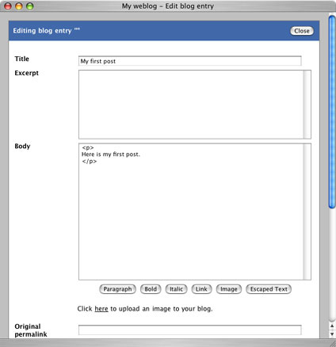

|
Now that you have the properties and categories configured, it's time to add some blog entries. A blog entry is typically something like a short article, piece of news, insight, abstract, opinion and so on. From a technical perspective, blog entries in Pebble are just short pieces of HTML that represent the content that you wish to display. This can be anything from a simple piece of text to an elaborate collection of text, images, tables, etc. In addition to this, Pebble stores other pieces of information alongside your blog entries such as a title, the date/time of publication and author.
Adding a Blog Entry
To add a new blog entry, click the New blog entry link after logging in. In this popup window, just fill in the title and main body of the entry. In addition to the title and body, a blog entry can be associated with one or more categories that you've previously defined. To do this, just tick the appropriate categories. Ignore the other fields for now - they are discussed later. When you've finished writing the entry, clicking the Preview button will show you what your new entry will look like. If necessary, you can make further changes and preview them.
When you're happy with the entry, click the Post to Blog button to publish the new entry to your blog. After a new entry has been posted, it will show up on the main page of your blog.
The body of a blog entry is just a XHTML/HTML fragment, meaning that you can use any XHTML/HTML tags you like for markup and formatting. Common examples include using bold and italics. Also, you can include other elements such as hyperlinks and images.
For convenience when posting code and HTML fragments you can enclose these within <escape> and </escape> tags. In doing so, any < or > characters will be automatically escaped to < and > respectively.
For long entries, you may not want the full content showing up on the summary (home, month or day view) pages, although still be visible via the permalinked page. For this reason, Pebble blog entries can be given excerpts. Typically these are shorter than blog entry bodies and, if populated, are displayed on the summary pages with a link to "read the full content" via the permalink.
Editing a Blog Entry
Blog entries can be edited at any time after they have been posted. To edit an entry, once you have logged in, click the Edit link underneath the appropriate blog entry. This opens the same window used to add a new entry, and you can again edit, preview and post when finished.
Removing a Blog Entry
Existing blog entries can also be removed at any time. To remove an entry, click the Remove link underneath the appropriate blog entry. This will open a popup window asking you to confirm your action.
Draft Blog Entries
At any time while editing a blog entry, you can save it as a draft and come back to it later. To do this, just click the Save as Draft button. To edit the draft at a later date, after logging in, click the Drafts link to open a window containing a list of all drafts that have been saved. Clicking on an entry will allow you to edit it once more where you can again save it as a draft or post it to your blog.
Templates
To help you write blog entries that are similar in some way, Pebble supports the notion of blog entry templates. By default, a blog entry contains opening and closing HTML paragraph tags and is a good starting point for simple blog entries. For more complex entries such as entries containing images, bulleted lists, book reviews and so on, you can save time by creating a template that can serve as a starting point.
To edit your templates, click the Templates link after logging in and a popup window will open where you can add, edit and remove templates. To use a template, just click on it to open the normal blog entry window.
Aggregating Content
If you also write content for an existing blog, you may want to publish/mirror that content on your Pebble blog, but still refer readers back to the original version. Pebble provides a simple way to achieve this by allowing you to store the original permalink alongside your blog content. By doing this, any content will show up on your Pebble blog, but the permalink will point always to the original content. When adding a new blog entry, simply enter the existing permalink into the Original permalink field.
Please note : The value you enter in this field will become the permalink for your blog entry. This means that when the entry shows up in a news aggregator, readers will be directed to the original version rather than the copy you have entered into Pebble.
Disabling Comments and TrackBacks
Another useful feature, related to aggregated content is that you can choose to turn off comments and TrackBacks so that you can direct responses to another location, such as the original article/content or an online forum.
|